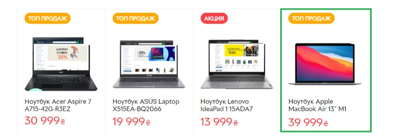
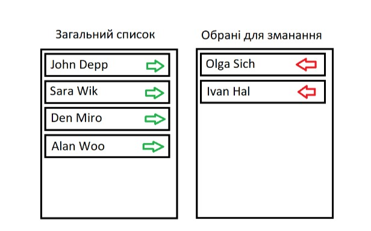

ДЗ №19 DOM, BOM, Document. Події.Продовження
-
Задача 1
Дано 10 рядків тексту «Hello!» у окремих div. При кліку на якийсь із них усі наступні
повинні бути зафарбовані у червоний колір.
-
Задача 2
Дано 5 елементів input. При введенні значення у якийсь із них необхідно автоматично
заповнювати інші (усі попередні у спадному порядку(кожен попередній має значення
на 1 менше за наступний), усі наступні на 1 більше (кожен наступне на 1 більше за попереднього)) -
Задача 3
Дано 5 випадковим чином згенерованих нумерованих списків з рандомними числами
(кількість елементів у списку випадкова від 1 до 10, елементи випадкові – від 1 до 100).
При натисненні на кнопку нумеровані списки з парною кількістю елементів зафарбувати у зелений колір, інші у червоний. -
Задача 4
Дано 3 таблиці розмірності 3*3 з випадковими числами. Якщо відбувається клік
на якійсь із клітинок, то до відповідної таблиці додається червона рамка
(спробуйте додати можливість відображення кількості кліків біля назви таблиці
з використанням відповідно доданого для цього атрибута). -
Задача 5
Відображаємо картки товарів, які користувач може вибирати. Вибраний товар має зелену
рамку (при кліку робити toogle з класом вибраного елемента) -
Задача 6
Дано список спортсменів. Потрібно сформувати список тих, які будуть брати участь у змаганні.
При цьому є два стовпці. В одному відображені всі спортсмени, в іншому – список тих, хто був
вибраний. При натисканні на зелену стрілку спортсмен переміщається у список для змагань. При
натисканні на червону стрілку спортсмен переміщається у загальний список. -
Задача 7
Відобразити падаючий сніг. Сніжинка з’являється у верхній частині екрану
(top =0) і з випадковою швидкістю рухається вниз (у setInterval викликати метод,
у якому додавати крок до top). Як тільки сніжинка досягає нижньої частини екрану
(top>maxTop) вона знову повинна з’явитись у верхній частині екрану (top=0).